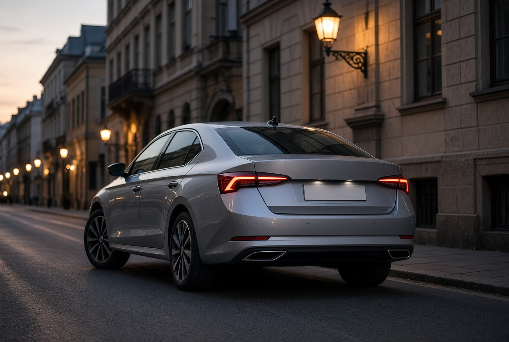

Mazda 3
C-клас для міста і траси. Дивись кузов, підвіску й історію ТО.
Каталог
C-клас для міста і траси. Дивись кузов, підвіску й історію ТО.
Кросовер, коли потрібні кліренс, привід і місце для людей.
Керованість. Перед покупкою рахуй діагностику і запчастини, не фото дисков.

Ліфтбек з великим багажником і простим сервісом.
| Модель | Клас | Для кого | Перевірити |
|---|---|---|---|
| Mazda 3 | C-клас | Щодень | Кузов, ходова |
| RAV4 | Кросовер | Виїзди | Привід, витрата |
| BMW 3 | Седан | Керованість | Сервісна історія |
| Octavia | Ліфтбек | Багаж | Простота ТО |